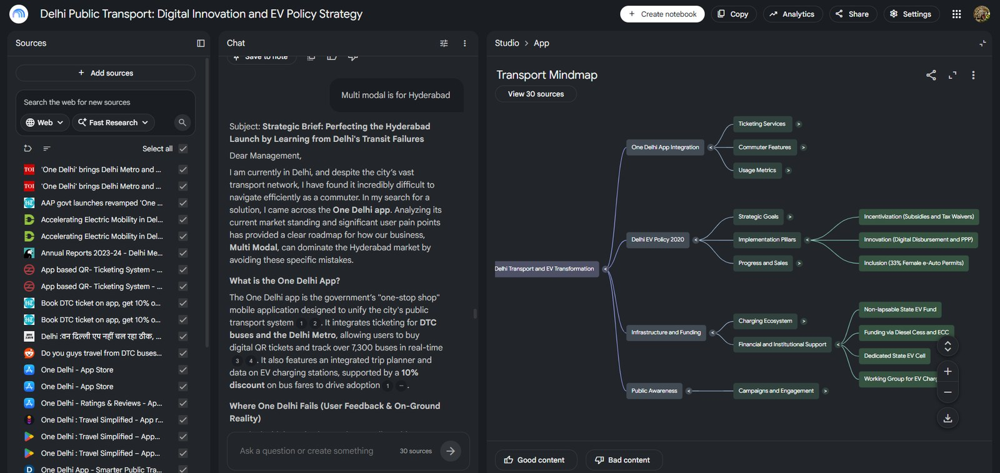
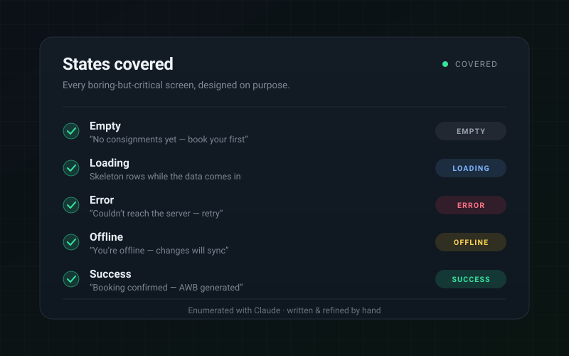
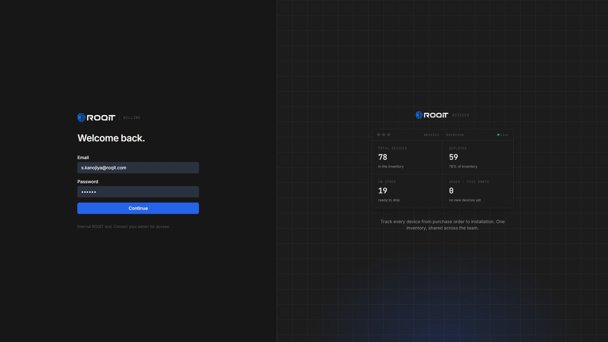

How I use AI in my work.
For the past year, AI has changed how I work — not by designing for me, but by clearing the slow parts so my hours go where judgment matters. It’s how I designed and built a full-stack CRM, solo, in 15 days. Here’s where it fits in my process.
This site was built with AI too. 🙂Getting to the real problem faster — and catching the edge cases before I design a screen.

Workflow mapping
I feed messy notes, docs and call transcripts to AI to map how a team actually works — and surface the edge cases before a single screen exists.
Pressure-testing the model
AI as a sparring partner on the schema and role model — poking holes in the data model early, while it’s still cheap to change.
Skipping static mockups — the prototype is real, working code from the start.
Prototyping in real code
Instead of a flat mockup, I prototype in working code — so stakeholders click the real thing, and the prototype becomes the product.
Idea to interface, in minutes
Spinning up a rough working UI to test a flow fast, then hand-finishing the parts that actually need craft.
Drafting the unglamorous parts so nothing gets missed and I can ship sooner.

Drafting the edge cases
Generating edge cases, empty states, error copy and tests with AI — so the boring-but-critical states are covered, not forgotten.

A full-stack CRM in 15 days
AI carried the research and boilerplate; I owned the schema, auth and interface. Blank page to deployed, solo, in 15 days.